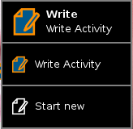

Start New
One more note regarding activities: by default, when you click on an activity in the Home View you reopen the most recent "instance" of that activity. For example, if you had been using the Write activity and click on its icon, you will continue editing the same document.
If you want to open a new document, you need to "right-click" on the activity icon to bring up a menu. Select "Start new".
You can use the same menu to access previous work.

Hit Next to continue.